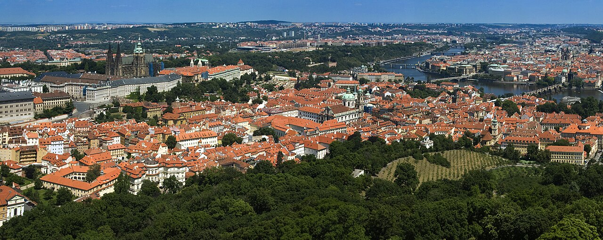

01. 跨越伏爾塔瓦河
離開查理大橋的最後一道橋影，腳步踏上小城區的古老石板路，朝聖的旅程正式轉向高處。
歷史在身後，現在在眼前。↑ 向上滑動，繼續朝聖之路
🚶♀️

02. 坎帕島的黃色企鵝
河岸邊靜靜排列的黃色企鵝，在歷史厚重的伏爾塔瓦河畔，像是一抹現代而幽默的記憶註腳。

03. 藍儂牆的自由色彩
即使色彩層層覆蓋，牆面上的樂句與符號依然在低吟著對自由的渴望。這裡不是景點，而是一段有溫度的停留。
記憶不是照順序排列，外在世界與內心交織。
04. 攀登皇家之路
沿著國王加冕遊行的歷史軌跡一步一步登高。街道兩側的巴洛克建築緩緩退後，空氣開始變得清冷而知性。

05. 城堡山之巔
穿過巍峨的門垛與歷史的戒備，兩位女醫師以專業而悠然的步調，終於抵達了這座俯瞰整座城市的權力與歷史中樞。
一步一腳印，洗滌靈魂的終點。
06. 聖維特的金色微光
當玫瑰窗的彩繪玻璃將陽光折射成碎裂的金光時，布拉格之春的旅程在這裡得到了最完美的洗禮與安放。
P07｜皇家之路：記憶登高
由河岸走向高處的登城旅程
在這一頁裡向上滑動／滾動滑鼠滾輪，會看到路上一個個亮點，點一下亮點看照片與文字
↑
